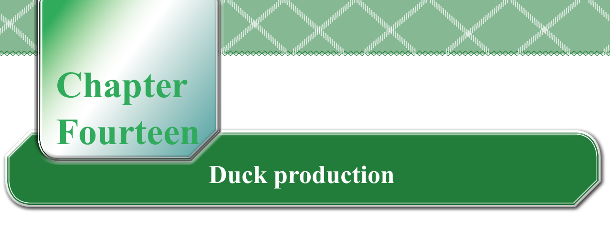
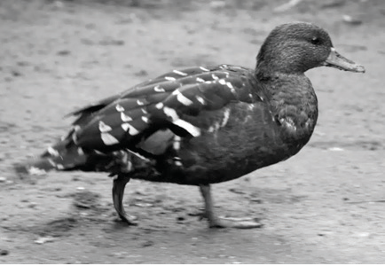
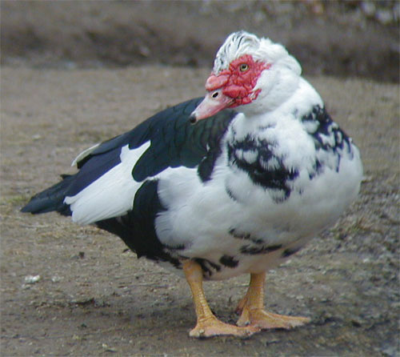
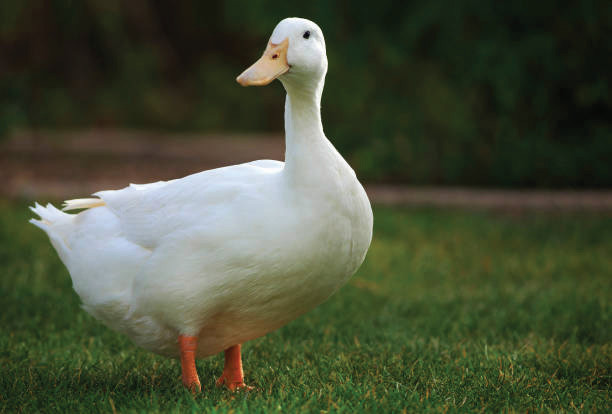

Chapter Fourteen. Duck production
Getting started with duck production
You might have seen the birds in the pictures labelled Figure 14.1. These are ducks. Ducks have broad bills, which are large and flat beaks that help them eat aquatic foods. They also have webbed feet, which are feet with skin between the toes that make it easier for them to swim and walk on water. Raising ducks is known as duck farming or duck production. As you start to learn about this, think about how ducks might influence your life, your family, your school, or your whole local area. Remember, as you explore this topic, keep asking questions and enjoy finding out new things about ducks.



Ducks are often kept for their eggs and meat. If they are raised in a free-range system with minimal feed, they can weigh about 1.8 kg and lay 60 to 80 eggs a